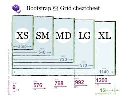

How to be a better digital interior designer
23 Feb 2023Put on your big boy boots…strap
Bootstrap is a wonderful creation that doesn’t add anything new in particular but it heavily expands everything you can do with HTML and CSS. It is debately possible to replicate anything you’d do with bootstrap with HTML/CSS and vice versa so why use both? Well bootstrap is if you took the most difficult aspects of HTML/CSS creations and created entire classes to make it convenient to reference these creations with a few lines or even characters. Bootstrap to me is a library of amazing functionality that will save you the effort of having to worry about every margin/padding pixel on your site and allows for convenient responsiveness. Want your site to work on mobile and PC’s? Well you can either figure out the pixel length of mobile phones, create the proper css to vary the length of an object based on the size of the screen and add this css styling to whiever objects need it. Or you add class=”lg” to your object and you’re done.

Favorite Bootstrap Functonalities
The most important functions we’ve come across so far in my opinion is navbars, columns, and footers. With these three things you can replicate almost any basic website out there using only bootstrap and CSS. Navbars have a slew of classes such as navbar-brand, nav-item, nav-link, etc but they all conform the navbar to be sleek and accordance to whatever class you assigned it. Once you get an idea of how each class affects your navbar it becomes much easier to see how to rearrange your navbar with the formatting that you want. Anchor logos, dropdown toggles, and even responsive collapsible navbars are all possible with one or a few lines of bootstrap. For main bodies or text seperated amongst the site columns works wonders at keeping symmetry and bounds for each of your sections. It’s possible to create a dozen columns if need be which allows for great organization and only having to deal with the headache of formatting each column’s content and not all content on the same level at the same time. Finally for the end of your page footers are a straightforward container that usually holds information about your website, copyright info, or links to anything that may be relevant. In the same vein of rows and columns bootstraphas wonderful functionality for keeping your footer organized not only with the content inside of it but the way it interacts with the page in general.
In Conclusion
 Ask someone famaliar with bootsrap versus someone only famaliar with HTML/CSS to recreate the following set of formats
They’ll both still hate you but someone famaliar with bootstrap has a much higher chance of being able to achieve the formatting and in a decent timeframe with responsivness and minimal code. The person who only knows css may still be able to recreate the page formatting but the code will be much larger, not as responsiveness, take a longer time, and would no longer consider you a friend.
Ask someone famaliar with bootsrap versus someone only famaliar with HTML/CSS to recreate the following set of formats
They’ll both still hate you but someone famaliar with bootstrap has a much higher chance of being able to achieve the formatting and in a decent timeframe with responsivness and minimal code. The person who only knows css may still be able to recreate the page formatting but the code will be much larger, not as responsiveness, take a longer time, and would no longer consider you a friend.
UI Frameworks are tedious to work with if you can’t wrap your head around divs/margin/padding but there are plenty of tools to help aid not only the ease of intergrating these things but making them responsive as well. It makes the difference between a website and an amazing website. Although I still have trouble with bootstrap it is safe o say I’d rather spend 3 hours learning how to make a navbar in 5 minutes with bootstrap than spend 3 hours learning how to make a navbar in 3 hours with only CSS.